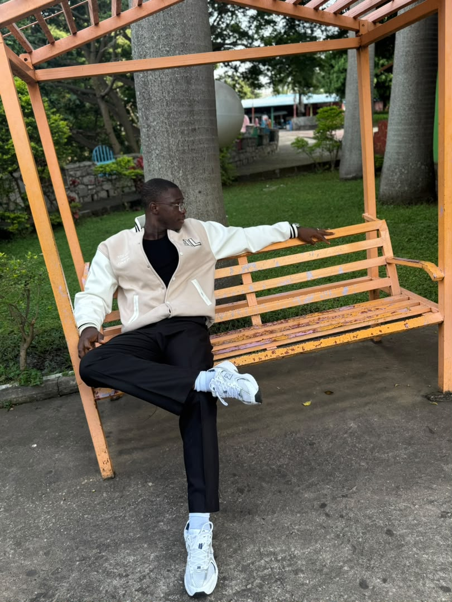

Poultry Farm Management System
A proposed digital management system designed to help small-scale poultry farmers organize flock records, feeding logs, and daily expenses.
Computer Science undergraduate at Miva Open University, raised in Kaduna with Yoruba roots in Iwo, Osun State. Exploring software systems, forex markets, and poultry agriculture.

Student concepts connecting Computer Science with agriculture and financial logging.
A proposed digital management system designed to help small-scale poultry farmers organize flock records, feeding logs, and daily expenses.
A proposed application for documenting forex trading activities, tracking currency pairs, and reviewing personal trade observations.